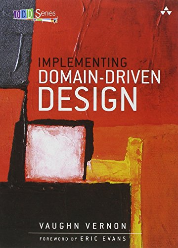
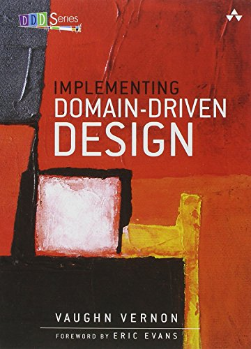

Python Sudeste 2018
Além do MVC: Testando Unitariamente Apps Django
Bernardo Fontes
São Paulo / SP
30 de Março de 2016
## DISCLAIMER
- ### Esta é só a minha verdade
- ### Testem
- ### Testem confortavelmente
## Problemas de MVC
- ### Uma decisão estritamente **arquitetural**
- ### O nível de **abstração é alto**
- ### **Esconde** muitas outras camadas do framework
- ### Não implica **pensar o design** da sua aplicação
- ### Alta chance de **misturar responsabilidades**
- ### Resultado: **legados bebês**
Object Mentor (SOLID)
 ## **Single Responsibility Principle**
- ### Nunca deve exstir mais de **uma razão para modificar** algo em uma classe.
## Single Responsibility Principle **para testes**
- ### Nunca deve exstir mais de uma razão para **TESTAR** algo em um objeto.
## Responsabilidades por Camada
- ### **Models**: abstração para armazenar e consultar dados
- ### **Views**: garantir fluxo HTTP de Request-Response para uma rota após executar o comportamento desejado
- ### **Templates**: apresendar dados em algum formato (HTML em geral)
## Nossa TODO List
```python
class Todo(models.Model):
HIGH_PRIORITY, LOW_PRIORITY = 2, 1
PRIORITY_CHOICES = [(HIGH_PRIORITY, 'High'), (LOW_PRIORITY, 'Low')]
owner = models.ForeignKey(settings.AUTH_USER_MODEL)
content = models.CharField(max_length=100)
is_done = models.BooleanField(default=False)
priority = models.IntegerField(choices=PRIORITY_CHOICES, default=LOW_PRIORITY)
```
## **Single Responsibility Principle**
- ### Nunca deve exstir mais de **uma razão para modificar** algo em uma classe.
## Single Responsibility Principle **para testes**
- ### Nunca deve exstir mais de uma razão para **TESTAR** algo em um objeto.
## Responsabilidades por Camada
- ### **Models**: abstração para armazenar e consultar dados
- ### **Views**: garantir fluxo HTTP de Request-Response para uma rota após executar o comportamento desejado
- ### **Templates**: apresendar dados em algum formato (HTML em geral)
## Nossa TODO List
```python
class Todo(models.Model):
HIGH_PRIORITY, LOW_PRIORITY = 2, 1
PRIORITY_CHOICES = [(HIGH_PRIORITY, 'High'), (LOW_PRIORITY, 'Low')]
owner = models.ForeignKey(settings.AUTH_USER_MODEL)
content = models.CharField(max_length=100)
is_done = models.BooleanField(default=False)
priority = models.IntegerField(choices=PRIORITY_CHOICES, default=LOW_PRIORITY)
```
Melhore seu vocabulário
 
## Domínio no Banco VS Domínio Desacoplado?
- ### Nosso domínio viverá no model do Django (domínio no banco)
## Responsabilidades por Camada
### **Models**: abstração para armazenar e consultar dados **com semântica de domínio**
- ### Testes de models **precisam** bater no banco
- ### Alguém pensou em fixtures?
## Model Mommy FTW!
### pip install model_mommy
Model-mommy offers you a smart way to **create fixtures** for testing in Django. With a simple and powerful API you can create many objects with a **single line of code**.
## Testando o **Modelo** de Dados
- ### Defina uma API que represente seu domínio e **encapsule** seus dados
- ### Teste como essa API manipula os dados
- ### Toda a aplicação só operar sobre o banco **através dessa API**
```python
from model_mommy import mommy
from django.tests import TestCase
from app.models import Todo
class TodoModelTests(TestCase):
def test_mark_as_high_priority(self):
todo = mommy.prepare(Todo, priority=Todo.LOW_PRIORITY)
todo.mark_as_high_priority() # trocamos mensagens
asser Todo.HIGH_PRIORITY == todo.priority # testamos dados
def test_mark_as_low_priority(self):
todo = mommy.prepare(Todo, priority=Todo.HIGH_PRIORITY)
todo.mark_as_low_priority()
asser Todo.LOW_PRIORITY == todo.priority # testamos dados
```
## Testando a **Manipulação** de Dados
- ### Pare de pensar em **query** e pense em **intenções**
- ### O que significa a consulta ```Todo.objects.filter(priority=1)```?
- ### Gere semântica de domínio através de **Model Managers** e **QuerySets** customizados
```python
from model_mommy import mommy
from django.tests import TestCase
from app.models import Todo
class TodoModelManagerTests(TestCase):
def test_filter_high_priority(self):
expected = mommy.make(Todo, priority=Todo.HIGH_PRIORITY, _quantity=2)
mommy.make(Todo, priority=Todo.LOW_PRIORITY, _quantity=3)
qs = Todo.objects.high_priority()
self.assertQuerysetEqual(qs, expected)
def test_filter_incomplete(self):
expected = mommy.make(Todo, is_done=False, _quantity=3)
mommy.make(Todo, is_done=True, _quantity=2)
qs = Todo.objects.incomplete()
self.assertQuerysetEqual(qs, expected)
def test_filter_chained_incomplete_and_high_priority(self):
expected = mommy.make(
Todo, is_done=False, priority=Todo.HIGH_PRIORITY, _quantity=3
)
mommy.make(Todo, is_done=True, priority=Todo.HIGH_PRIORITY)
mommy.make(Todo, is_done=True, _quantity=2)
qs = Todo.objects.incomplete().high_priority()
self.assertQuerysetEqual(qs, expected)
```

## Domínio no Banco VS Domínio Desacoplado?
- ### Nosso domínio viverá no model do Django (domínio no banco)
## Responsabilidades por Camada
### **Models**: abstração para armazenar e consultar dados **com semântica de domínio**
- ### Testes de models **precisam** bater no banco
- ### Alguém pensou em fixtures?
## Model Mommy FTW!
### pip install model_mommy
Model-mommy offers you a smart way to **create fixtures** for testing in Django. With a simple and powerful API you can create many objects with a **single line of code**.
## Testando o **Modelo** de Dados
- ### Defina uma API que represente seu domínio e **encapsule** seus dados
- ### Teste como essa API manipula os dados
- ### Toda a aplicação só operar sobre o banco **através dessa API**
```python
from model_mommy import mommy
from django.tests import TestCase
from app.models import Todo
class TodoModelTests(TestCase):
def test_mark_as_high_priority(self):
todo = mommy.prepare(Todo, priority=Todo.LOW_PRIORITY)
todo.mark_as_high_priority() # trocamos mensagens
asser Todo.HIGH_PRIORITY == todo.priority # testamos dados
def test_mark_as_low_priority(self):
todo = mommy.prepare(Todo, priority=Todo.HIGH_PRIORITY)
todo.mark_as_low_priority()
asser Todo.LOW_PRIORITY == todo.priority # testamos dados
```
## Testando a **Manipulação** de Dados
- ### Pare de pensar em **query** e pense em **intenções**
- ### O que significa a consulta ```Todo.objects.filter(priority=1)```?
- ### Gere semântica de domínio através de **Model Managers** e **QuerySets** customizados
```python
from model_mommy import mommy
from django.tests import TestCase
from app.models import Todo
class TodoModelManagerTests(TestCase):
def test_filter_high_priority(self):
expected = mommy.make(Todo, priority=Todo.HIGH_PRIORITY, _quantity=2)
mommy.make(Todo, priority=Todo.LOW_PRIORITY, _quantity=3)
qs = Todo.objects.high_priority()
self.assertQuerysetEqual(qs, expected)
def test_filter_incomplete(self):
expected = mommy.make(Todo, is_done=False, _quantity=3)
mommy.make(Todo, is_done=True, _quantity=2)
qs = Todo.objects.incomplete()
self.assertQuerysetEqual(qs, expected)
def test_filter_chained_incomplete_and_high_priority(self):
expected = mommy.make(
Todo, is_done=False, priority=Todo.HIGH_PRIORITY, _quantity=3
)
mommy.make(Todo, is_done=True, priority=Todo.HIGH_PRIORITY)
mommy.make(Todo, is_done=True, _quantity=2)
qs = Todo.objects.incomplete().high_priority()
self.assertQuerysetEqual(qs, expected)
```
Testando os Buracos Negros
## Testar Views é **chato**!
- ### Tenho que configurar o banco
- ### Tenho que logar o usuário
- ### Tenho que configurar permissões
- ### Tenho que checar vários fluxos de sucesso
- ### Tenho que lidar com os de falha
## Se é **chato/difícil de testar**, isso pode ser um grande **bad smell** sobre seu código...
## Responsabilidades por Camada
- ### Views: garantir **fluxo HTTP** de Request-Response para uma rota após **executar o comportamento desejado**
## **fluxo HTTP**
- ### Request GET/POST...
- ### 404 para página não encontrada
- ### 200 para sucesso com conteúdo
- ### 302 para um redirect e por aí vai...
executar o comportamento desejado
### Um exemplo antigo e meu
```python
def index(request):
today = date().today()
hangovers = Hangover.objects.filter(day=today).count()
if request.method == 'GET':
context = RequestContext(request, {'hangovers': hangovers})
return render_to_response('index.html', context)
elif request.method == 'POST':
msg = 'Eu sou a {}ª pessoa #deressaca hoje! http://deressaca.net'.format(hangovers)
twitter_message = urllib.urlencode({'status': msg})
twitter_url = 'http://twitter.com/home?{}'.format(twitter_message)
if 'new_hangover' in request.POST:
Hangover.objects.create()
return HttpResponseRedirect(twitter_url)
else:
return HttpResponseRedirect(reverse('counter'))
```
## Problemas para testar dessa view
- Requisições Get + Requisições Post
- Formatação da mensagem do Tweet
- Redirecionamento pro twitter com mensagem
- Criação de objeto Hangover
- Não criação de objeto Hangover
- Redirect para reverse de counter
## Responsabilidades **Reais** da View
- Fluxo de Get Vs Fluxo de Post
- ~~Formatação da mensagem do Tweet~~
- ~~Redirecionamento pro twitter com mensagem~~
- ~~Criação de objeto Hangover~~
- ~~Não criação de objeto Hangover~~
- Redirect para alguma url (reverse de counter ou do twitter)
- ### **Quem** faz o resto então?
##Use Cases
*"The software in this layer contains **application specific business rules**. It **encapsulates and implements** all of the use cases of the system. These use cases **orchestrate the flow of data** to and from the entities, and direct those entities to use their enterprise wide business rules to achieve the goals of the use case."*
- Uncle Bob
## Responsabilidades por Camada
- ### Views: garantir **fluxo HTTP** de Request-Response para uma rota após **executar um CASO DE USO**
- ### Como testar caso de uso? **Mockando** sua chamada!
- ### Garantimos o funcionamento testando **unitariamente** o caso de uso
## Mock
- ### **Simulam** funcionamento de objetos
- ### Respeitam **API** dos objetos
- ### Viabilizam maneira de fazer **asserções**
### Testes
```python
class HangoverIndexTests(TestCase):
url = reverse_lazy('index')
def test_show_counter_on_context(self):
mommy.make(Hangover, day=date.today(), _quantity=4)
response = self.client.get(self.url)
self.assertEqual(4, response.context['hangovers'])
def test_uses_correct_template_on_get(self):
response = self.client.get(self.url)
self.assertTemplateUsed(response, 'index.html')
@patch.object(SendTwitterHangoverMessageUseCase, 'execute')
def test_redirects_to_use_case_url(self, mocked_execute):
mocked_execute.return_value = reverse('counter')
data = {'new_hangover': True}
response = self.client.post(self.url, data)
mocked_execute.assert_called_once_with(create_hangover=True)
self.assertRedirects(response, reverse('counter'))
```
### Possível implementação
```python
def index(request):
today = date.today()
hangovers = Hangover.objects.filter(day=today)
if request.method == 'GET':
context = RequestContext(request, {'hangovers': hangovers})
return render_to_response('index.html', context)
elif request.method == 'POST':
if 'new_hangover' not in request.POST:
return reverse('counter')
redirect_url = use_case.execute()
return HttpResponseRedirect(redirect_url)
```
### Possível implementação
```python
class SendTwitterHangoverMessageUseCase():
def execute(self):
today = date.today()
Hangover.objects.create()
hangovers = Hangover.objects.filter(day=today).count()
msg = 'Eu sou a {}ª pessoa #deressaca hoje! http://deressaca.net'.format(hangovers)
twitter_message = urllib.urlencode({'status': msg})
twitter_url = 'http://twitter.com/home?{}'.format(twitter_message)
return twitter_url
```
Definitivamente leia mais aqui:
### Dicas extras para testar Views
- ### Crie **asserções customizadas** para Views
- ### Crie métodos auxiliares para **gerência de usuários**
- ### **Nunca** mockar o comportamento padrão do Forms (bad smell)
- ### Utlize mommy recipes =)
## Testando a Área Cinza: **Forms/Serializers**
## Responsabilidades
- ### Validação, Sanitização e Formatação
- ### Teste o que for dos Forms **unitariamente**! Lembre-se: testar pela view é chato
- ### ModelForms **nem sempre** são uma boa idéia...
- ### Garanta um **output de dados** desacoplado da API do Django
- ### Forms também são bons canditados de **asserções customizadas**
```python
class TodoListModelFormTests(TestCase):
def setUp(self):
self.data = {'content': 'content', 'owner': 42}
self.user = mommy.make(User, id=42)
def test_required_fields(self):
required_fields = ['content', 'owner']
form = TodoListForm({})
form.is_valid()
self.assertEqual(len(required_fields), len(form.errors))
for field in required_fields:
self.assertIn(field, form.errors)
def test_cleans_content_to_upper_case(self):
form = TodoListForm(self.data)
self.assertTrue(form.is_valid())
self.assertEqual('CONTENT', form.cleaned_data['content'])
def test_get_form_result_data(self):
form = TodoListForm(self.data)
self.assertTrue(form.is_valid())
data = form.get_result_data() # redução de acoplamento de objeto
self.assertEqual('CONTENT', data['content'])
self.assertEqual(self.user, data['owner'])
def test_priority_choices_range(self):
priority_choices = [(1, 'High'), (2, 'Low')]
form = TodoListForm()
self.assertEqual(priority_choices, list(form.fields['priority'].choices))
```
Asserções Customizadas para Forms
```python
def assertRequiredFields(self, required_fields, form_class, *args, **kwargs):
form = form_class(*args, **kwargs)
form.is_valid()
self.assertEqual(len(required_fields), len(form.errors))
for field in required_fields:
self.assertIn(field, form.errors)
def assertChoiceFieldOptions(self, expected_choices, form, field_name):
expected_choices = list(expected_choices)
self.assertEqual(expected_choices, list(form.fields[field_name].choices))
```
## Responsabilidades dos Templates
- ### **Renderizar variáveis** corretamente
- ### Funcionamento de **Template Filters**
- ### Funcionamento de **Template Tags**
### Renderizar variáveis corretamente
```python
# settings.py
TEMPLATE_STRING_IF_INVALID = 'XXXXX-INVALID_CONTEXT_VAR-XXXXXX'
# sobreescrita de assertTemplateUsed
def assertTemplateUsed(self, response, template_name):
super(TestCase, self).assertTemplateUsed(response, template_name)
self.assertNotIn(settings.TEMPLATE_STRING_IF_INVALID, response.content, self.__clean_template_output(response))
```
### Template Tags e Filters
- ### Validar o **funcionamento**
- ### Validar que **foi registrada**
- ### **Template Library** pode ser usada para ambos
```python
def test_my_crazy_upper(self):
content = '{% load app_tags %}{{ "bernardo"|crazy_upper }}'
template = Template(content)
output = template.render({})
self.assertEqual("BeRnArDo", output)
```
## Isso é só o começo...
- ### Middlewares
- ### Caching
- ### Emails
- ### Controle de permissões
- ### APIs Rest e por aí vai
## Resumindo
- Models, Managers e QuerySet com **linguagem de domínio encapsulando detalhes** de implentação e persistência
- Views só são responsáveis por **fluxo HTTP** e **disparo de execução**
- MVC define sua **arquitetura**, não seu design
- Use Cases podem ser seus amigos
- Teste Forms **unitariamente** para facilitar testes em camadas mais altas (views, por exemplo)
- Utilize a **linguagem de Template do Django** como amiga para testar Templates